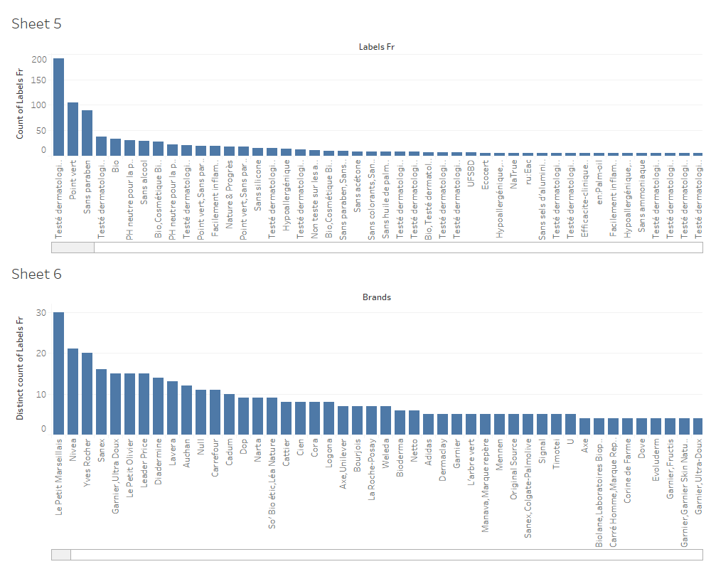
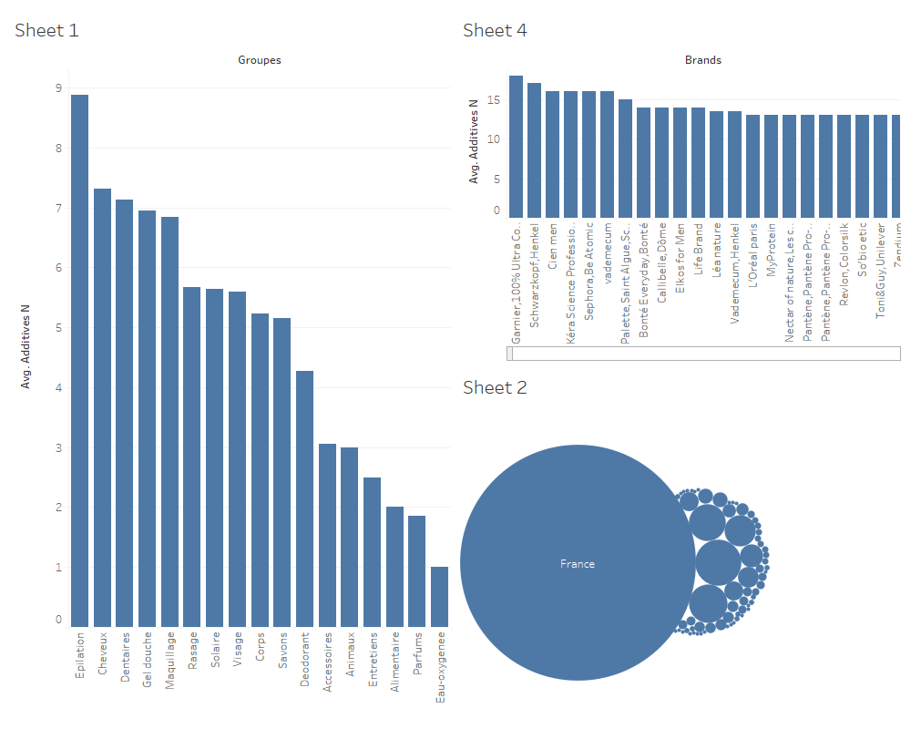
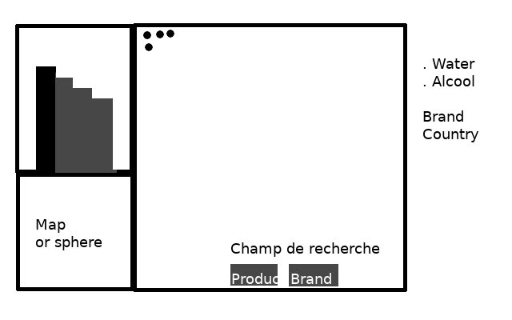

Introduction
Nous choississons souvent nos produits en fonction de mots clés. "Le bio", "Sans hallergène", "Durée 24heures". Beaucoup de nos produits utilisent des labels pour mettre en valeur leur principal atout. Malheureusement, à en regarder la liste des additifs, on se demande si il s'agit uniquement de marketing.
Nous verrons, les labels qui sont les plus utilisés sur les produits vendus en France. Et par la suite, les catégories de produits (Cheveux, solaire...) et les marques seront étudiées.
Présentation du jeu de données
Plus de 5000 produits ont été répertoriés par des utilisateurs. Chaque produit possède une description, notamment sa marque, sa catégorie, le nombre d'additifs qu'il contient, le label utilisé.
Pour plus de pertinence, nous avons choisi de filtrer nos données, en supprimant les produits ayant une description incomplète (absence du nombre d'additifs, absence catégorie)
Les labels
Face à ces données, nous avons commencé par étudier les labels. On retrouve dans les premières positions, les labels qui "prouvent" l'éfficacité ou les bienfaits du produit ("bio", "Sans paraben", "Testé dermatologiquement"). Certains labels mettent en avant leur marque (Point vert), d'autres les dangers (Facilement inflammable).
C'est dans l'hygiène qu'on trouve le plus de labels différents.

Les marques
Par la suite, nous avons décidé de passer à l'envers du décors, les additifs. À l'inverse des labels qui sont bien visibles, la liste des additifs est souvent dissimulée et en petite police. Tout pour empêcher le consommateur d'y prendre intérêt.
La majeure partie des produits viennent de France. Les marques de produits capillaires sont ceux qui utilisent le plus d'additifs, surtout pour les marques du Grand publique Garnier et Schwarzkopf. On retrouve aussi le secteur des produits pour l'épilation.

Conclusion
On peut observer que nos produits sont constitués d'un bon nombre d'additifs. Les acteurs du marketing ont développé un nombre important de labels pour attirer le consommateur, surtout pour prouver leur bienfait (bio, teste dermatologique).
Annexes
Analyse du jeu de données:
Notre jeu de données est assez volumineux. Sa construction, réalisée par des utilisateurs, n'est cependante pas très rigoureuse. Certaines descriptions sont partielles. Pour d'autres cas, les catégories et les marques existent sous plusieurs formes proches (nom de marque raccourci, choix des tags différents). Ces défauts ont impactés nos résultats.
Deux colonnes ont été crées pour rassembler des catégories et des pays.
Questions:
Quels labels sont les plus utilisés?
Quelles marques utilisent le plus de labels distincts?
Quelles catégories de produits utilisent en moyenne le plus d'additifs?
Quelles marques utilisent en moyenne le plus d'additifs?
D'ou viennent nos produits?
Maquette vue connectée

Technologies utilisées
d3.js
Dc pour la vue connectée
Tableau